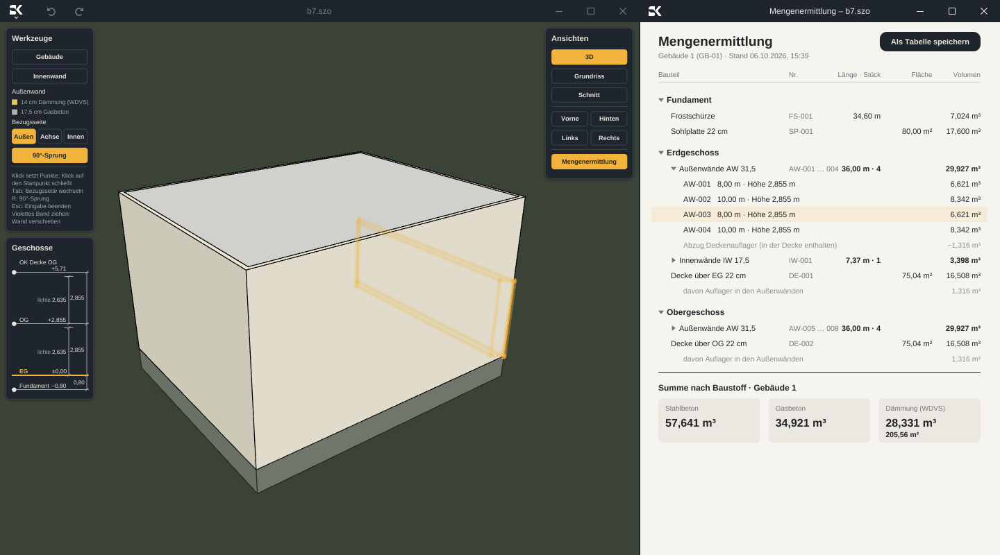
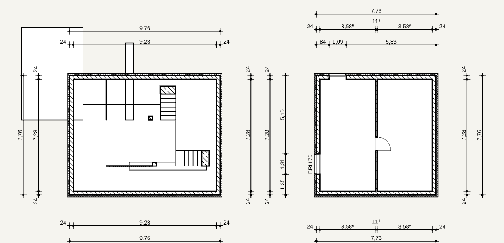
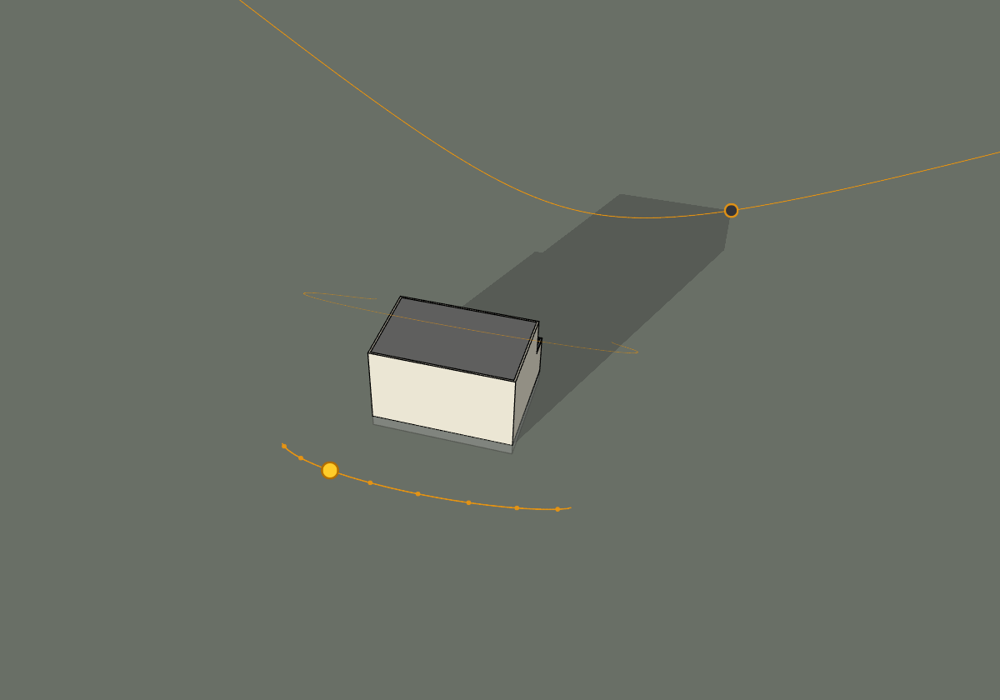

● BIM für Ein- und Mehrfamilienhäuser
Haus zeichnen.
Mengen, Kosten und LV sind schon da.
Skizzeo ist der 3D-Gebäudemodellierer für den Wohnungsbau, gedacht von einem Bauplaner. Wände, Fenster und Türen ziehen Sie direkt am Modell. Räume, Maßketten und Regenfallrohre entstehen von selbst, ohne Parameterflut.
Für Architekten · Bauunternehmer · Bauträger · Immobilienmakler

01 Modell und Mengen
Gleichzeitig sichtbar, in beide Richtungen gekoppelt.
Zeile anfahren, und die Wand leuchtet im Modell. Wand anklicken, und ihre Zeile ist markiert.
02 Kosten live
↗Kostenschätzung nach DIN 276,
mit Baustelle und Erdarbeiten
78.816€
Mengen nach VOB, mit Rechenweg Beispiel

↗
↗Eigene Bauteile.
Ohne Programmieren.
Treppe, Geländer, Stütze: Erweiterungsbauteile liest Skizzeo schon heute ein, mit Mengen, Kosten und LV.
IHRE BESCHREIBUNGGerade Treppe, 16 Steigungen, Lauf 1,00 m breit.